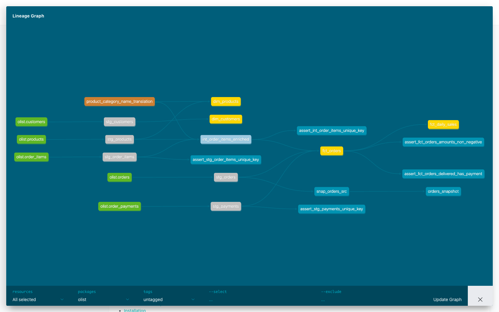
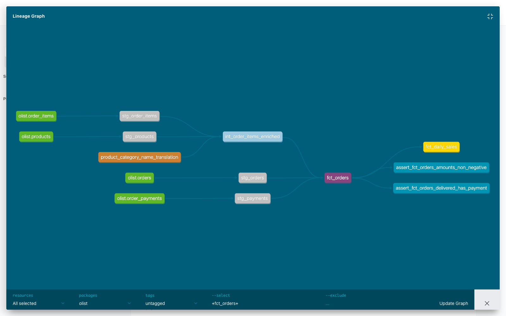
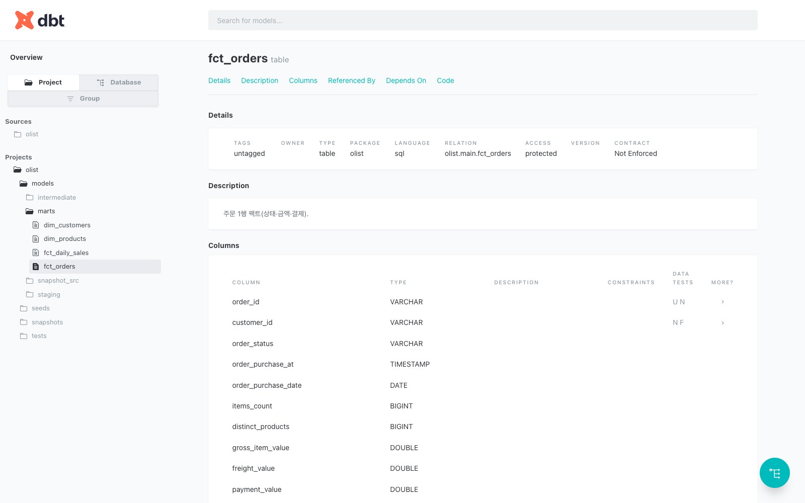

흩어진 raw CSV 6개를 → 정리하고 → 합쳐서 → "매출 리포트"로 만드는 자동화 파이프라인입니다. 한 줄 명령(dbt build)이면 전부 다시 만들어지고, 데이터 검증까지 끝납니다.
source()로 raw CSV를 직접 참조 — dbt가 만든 게 아닌 외부 원본을 가리킴
② 변환SELECT만 작성하면 dbt가 view/table을 자동 생성 (DDL을 직접 안 씀)
③ 연결ref()로 모델을 잇기만 하면 실행 순서(DAG)가 자동 결정
④ 검증dbt test로 데이터 품질을 자동 단언 (중복·null·고아데이터·이상치)
⑤ 문서dbt docs로 계보 지도와 문서가 자동 생성 (이 노트의 그림들)
기술 이전에 "무엇을 위한 데이터인가"부터. dbt는 결국 비즈니스 질문에 답하는 표를 만드는 도구예요.
Olist는 브라질의 전자상거래 마켓플레이스 통합 플랫폼입니다. 소상공인(셀러)이 여러 쇼핑몰에 한 번에 입점하도록 연결해주는 중개 사업자예요. 이 공개 데이터셋은 2016년 9월 ~ 2018년 10월 실제 주문 기록으로, 주문·상품·결제·고객·셀러가 여러 CSV로 정규화되어 있습니다. (라이선스: CC BY-NC, 학습 전용)
"언제 매출이 터졌나? 일별 추세는? 평균 주문금액은?"
→ fct_orders, fct_daily_sales
"어느 지역 고객이 많나? 어떤 카테고리가 잘 팔리나?"
→ dim_customers, dim_products
| health_beauty (헬스·뷰티) | R$1.44M |
| watches_gifts (시계·선물) | R$1.31M |
| bed_bath_table (침구·욕실) | R$1.24M |
| sports_leisure (스포츠·레저) | R$1.16M |
| computers_accessories | R$1.06M |
결제: 신용카드 74% · boleto(브라질식 지로) 19% · voucher 6% · 체크카드 1%
고객 지역: 상파울루(SP) 42% · 리우(RJ) 13% · 미나스(MG) 12% → 남동부 대도시 편중
dbt를 이해하려면 먼저 "데이터 처리 방식이 어떻게 바뀌었는지"를 알아야 합니다.
추출(E) → 별도 서버에서 변환(T) → 창고에 적재(L).
변환 로직이 데이터 창고 밖(전용 ETL 도구)에 살았어요. 비싸고 느렸죠.
추출(E) → 일단 그대로 적재(L) → 창고 안에서 SQL로 변환(T).
클라우드 창고(BigQuery·Snowflake)가 싸고 강력해지면서, "창고 안에서 변환"이 표준이 됐어요.
그런데 "창고 안에서의 변환(T)"을 체계적으로 관리할 도구가 없었습니다. 그 빈자리를 채운 게 dbt예요. (dbt = data build tool, ELT의 T만 담당)
2016년 Fishtown Analytics(현 dbt Labs)의 Tristan Handy가 이 간극을 메우는 아이디어로 dbt를 만들었습니다:
SELECT 문만 쓰면, dbt가 그것을 소프트웨어 엔지니어링 산출물(버전관리되고·테스트되고·문서화되고·의존성이 관리되는 데이터 모델)로 바꿔준다."
맞아요, SQL은 DB에 직접 쳐도 돕니다. dbt가 주는 건 "속도"가 아니라 "관리·신뢰·협업"이에요. (연산은 어차피 DB가 합니다)
| 측면 | DB에 직접 SQL | dbt로 관리 |
|---|---|---|
| 코드 보관 | 여기저기 흩어짐 | .sql 파일 → Git 버전관리 |
| 실행 순서 | 사람이 외워야 함 | ref()로 자동 결정 |
| 데이터 검증 | 매번 눈으로 | 테스트로 자동 단언 |
| 문서·계보 | 없음 | 자동 생성 |
| 환경 분리 | 테이블명 손으로 변경 | dev/prod 타깃 전환 |
기준: "한 번 보고 버릴 쿼리는 DB에 직접, 계속 유지·반복·공유할 변환 로직은 dbt."
SELECT = 데이터 모델dbt의 기본 단위는 모델(model) — 보통 SELECT 문 하나(파일당 1모델). CREATE TABLE 같은 DDL은 직접 안 씁니다. SELECT만 쓰면 dbt가 설정에 따라 알아서 만들어요.
모델을 ref()로 참조하면 dbt가 DAG(방향성 비순환 그래프)를 자동 구성하고 실행 순서를 스스로 정합니다. "A 먼저 B 나중"을 사람이 지정할 필요 없음.
dbt는 연산을 직접 하지 않습니다. 컴파일한 SQL을 연결된 DB(DuckDB·BigQuery 등)에 떠넘겨(push-down) 실행시켜요. 그래서 성능은 DB에 달려 있습니다.
버전관리(Git)·모듈화(ref·매크로)·테스트·문서화·의존성관리 — 소프트웨어 개발의 좋은 습관을 데이터 변환에 그대로 가져옵니다.
ref()/source()를 실제 database.schema.table 식별자로 치환하고, Jinja 제어문/매크로를 펼칩니다. 결과는 target/compiled/에 저장.EL 도구가 적재한 원본 테이블/파일을 가리킴. YAML(_sources.yml)에 선언 필요. 파이프라인의 입구에서만 사용.
from {{ source('olist','orders') }}다른 모델·seed를 가리킴. 그 이후 모든 단계에서 사용. 이걸로 의존(DAG)이 생김.
from {{ ref('stg_orders') }}둘은 중첩(서로 안에 넣기)이 아니라 파이프라인의 층마다 번갈아 씁니다: source()(입구) → staging → ref()(이후 전부).
dbt는 데이터 플랫폼마다 전용 어댑터 플러그인으로 연결합니다. 어댑터가 플랫폼별 SQL 방언·연결·DDL 차이를 흡수해요. 우리는 dbt-duckdb를 씁니다 — 별도 DB 서버 없이 로컬 파일 하나(olist.duckdb)로 동작해 가볍습니다. (튜토리얼에서 흔한 dbt-postgres와 달리 서버 기동 불필요)
dbt는 SQL + Jinja를 결합합니다. ref()·source()도 사실 Jinja 함수예요. Jinja로 for·if·변수·매크로(재사용 함수)를 쓸 수 있고, 컴파일 시 모두 펼쳐져 순수 SQL이 됩니다.
select * from {{ source('olist','orders') }}select * from read_csv_auto('data/olist_orders_dataset.csv')source('olist','orders')가 CSV를 직접 읽는 함수로 치환됩니다. dbt-duckdb의 external source 기능 덕분에 raw 테이블을 미리 적재하지 않고도 CSV를 source로 쓸 수 있어요. (_sources.yml에 external_location 한 줄)dbt 프로젝트는 "폴더 규칙이 곧 동작"입니다. 어느 폴더에 두느냐가 dbt가 그것을 어떻게 다룰지를 결정해요.
olist/
├── dbt_project.yml # 프로젝트 정의 · 폴더별 materialization · 노드 색
├── profiles.yml # 연결 정보 (type: duckdb · 파일 경로)
├── data/ # Olist 원본 CSV 6개 (gitignore — 레포엔 안 올림)
├── seeds/
│ └── product_category_name_translation.csv # 카테고리 영문 번역 (작은 룩업 → seed)
├── models/
│ ├── staging/ # +materialized: view (raw 1:1 청소)
│ │ ├── _sources.yml # ★ external CSV를 source로 선언
│ │ ├── _staging.yml # staging 테스트 정의
│ │ ├── stg_orders.sql stg_customers.sql stg_products.sql
│ │ └── stg_order_items.sql stg_payments.sql
│ ├── intermediate/ # +materialized: view (조인·파생)
│ │ ├── int_order_items_enriched.sql
│ │ └── _intermediate.yml
│ ├── marts/ # +materialized: table (최종 리포트)
│ │ ├── fct_orders.sql fct_daily_sales.sql
│ │ ├── dim_customers.sql dim_products.sql
│ │ └── _marts.yml # 마트 테스트
│ └── snapshot_src/ # SCD2 실습용 변경가능 테이블
├── snapshots/
│ └── orders_snapshot.yml # 이력 추적 정의 (SCD2)
├── tests/ # singular(맞춤) 테스트 — 직접 짠 SQL
│ ├── assert_fct_orders_amounts_non_negative.sql
│ └── assert_*_unique_key.sql ...
└── target/ # ⚙️ dbt 생성: 컴파일 SQL · manifest · catalogdbt_project.yml)같은 SELECT라도 materialization 설정에 따라 만들어지는 물리 객체가 달라집니다. 폴더 단위로 기본값을 줍니다:
models:
olist:
staging:
+materialized: view # 매번 새로 계산하는 "바로가기"
+docs: {node_color: "silver"}
intermediate:
+materialized: view
+docs: {node_color: "#9ecae1"}
marts:
+materialized: table # 결과를 실제로 저장 → 빠른 조회
+docs: {node_color: "gold"}node_color 설정이 뒤 계보 그래프의 노드 색으로 그대로 나타나요.stg_가 view가 되는 건 "이름"이 아니라 models/staging/ 폴더에 걸린 설정 때문입니다. dbt는 stg_라는 글자를 해석하지 않아요. (네이밍은 사람이 알아보기 위한 관례일 뿐, 강제 규칙이 아님)흩어진 CSV가 매출 리포트가 되기까지 — 4개 레이어를 거칩니다. 각 단계는 앞 단계 결과를 ref()로 받습니다.
olist_orders ─────► stg_orders ──────────────────┐
olist_order_items ► stg_order_items ─┐ ├─► fct_orders ──► fct_daily_sales
olist_products ───► stg_products ────┼─► int_order_items_enriched ─┘ (일별 매출)
(seed) 카테고리번역 ─────────────────┘
olist_order_payments ► stg_payments ─────────────► (fct_orders 결제 집계)
olist_customers ──► stg_customers ──────────────► dim_customers
olist_products ───► stg_products ───────────────► dim_products이 파이프라인의 핵심 질문: "각 원본 파일은 어디서 와서(source/seed) → 어떻게 정리되고(stg) → 무엇과 합쳐져(int) → 결국 어떤 비즈니스 표(mart)가 됐나?" 한 줄씩 따라가 봅니다.
| 원본 CSV (들어온 방식) | → staging (ref로 청소) | → intermediate (조립) | → mart (최종 비즈니스 표) |
|---|---|---|---|
olist_orders source주문 헤더 99,441건 |
stg_orders날짜 캐스팅·상태 정리 |
— | fct_orders → fct_daily_sales 주문·일별 매출 |
olist_order_items source라인아이템 112,650건 |
stg_order_items가격·배송비 숫자화 |
int_order_items_enriched 아이템+상품+카테고리 조인, 아이템총액 파생 |
fct_orders (아이템 집계) |
olist_products source상품 32,951건 |
stg_products |
dim_products 상품+영문 카테고리 |
|
product_category_ seed카테고리 번역 71건 |
— (seed는 ref로 바로 사용) | int·dim_products에서 영문명 룩업으로 조인 |
(dim_products 카테고리 영문화) |
olist_order_payments source결제 103,886건 |
stg_payments결제수단·금액 정리 |
— | fct_orders (결제 집계) |
olist_customers source고객키 99,441건 |
stg_customers |
— | dim_customers 고객·지역 |
source 5개 — 큰 거래 데이터(주문·아이템·결제·상품·고객). external CSV로 직접 참조(미리 적재 안 함).
seed 1개 — 작고 거의 안 바뀌는 룩업(카테고리 번역). dbt seed로 적재.
fct_orders ← orders + int(아이템) + payments 를 order_id로 집계 후 조인
fct_daily_sales ← fct_orders를 날짜로 재집계
dim_customers ← stg_customers / dim_products ← stg_products + 번역 seed
stg_* 5개로 청소 → int_order_items_enriched 하나로 조립 → 마트 4개(fct 2 + dim 2). 가장 복잡한 건 fct_orders — 주문·아이템·결제 3갈래를 모아 "주문 1행"으로 만든 핵심 매출 테이블입니다.Olist CSV 5종을 source()로 직접 참조(external CSV). 작은 카테고리 번역표만 seed로 적재. _sources.yml 한 곳에 선언합니다:
sources:
- name: olist
meta:
external_location: "read_csv_auto('data/olist_{name}_dataset.csv', header=true)"
tables:
- name: orders # {name} → orders 로 치환됨
- name: order_items
- name: customers ...{name}이 테이블명으로 치환되어 olist_orders_dataset.csv를 직접 읽습니다. raw 테이블을 미리 적재하지 않아도 source로 쓸 수 있는 게 dbt-duckdb의 장점.
raw 1개당 staging 1개(1:1 원칙). 예) stg_orders는 문자열 타임스탬프를 진짜 날짜/시각 타입으로 캐스팅하고 컬럼명을 정리:
with source as (
select * from {{ source('olist', 'orders') }}
),
renamed as (
select
order_id, customer_id, order_status,
try_cast(order_purchase_timestamp as timestamp) as order_purchase_at,
try_cast(order_purchase_timestamp as date) as order_purchase_date
from source
)
select * from renamedstg_orders · stg_order_items · stg_products · stg_payments · stg_customers (5종)
int_order_items_enriched: 주문 아이템 + 상품 + 카테고리 번역을 조인하고, 아이템 총액(가격+배송비)을 파생합니다.
select
items.order_id, items.order_item_number, items.product_id,
coalesce(category.product_category_name_english, products.product_category_name) as product_category,
items.item_price, items.freight_value,
items.item_price + items.freight_value as item_total
from {{ ref('stg_order_items') }} items
left join {{ ref('stg_products') }} products on ...
left join {{ ref('product_category_name_translation') }} category on ...grain(행 단위) = order_id + order_item_number. 마트가 이걸 집계해서 씁니다.
fct_orders — 주문 1행, 금액·결제·상태
fct_daily_sales — 일별 매출 집계
dim_customers — 고객 정보
dim_products — 상품+카테고리(영문)
fct/dim 구분: fact는 "사건·숫자"(주문이 일어났고 얼마였다), dim은 "설명"(이 고객·상품은 누구/무엇). 매출 분석은 보통 "fact(숫자)를 dim(설명)으로 쪼개 보는" 식 — 예: 카테고리(dim)별 매출(fact).
fct_orders는 아이템(주문당 여러 행)과 결제(주문당 여러 행)를 합칩니다. 그냥 조인하면 행이 곱해져 금액이 부풀어요. 그래서 각각 order_id로 먼저 집계(group by)한 뒤 조인했습니다. 이걸 검증하려고 "주문 1행 = order_id 유일" 테스트를 걸어 확인했어요.dbt의 가장 멋진 기능: ref()로 연결만 해두면 데이터가 어디서 와서 어디로 가는지 지도를 자동 생성합니다. (dbt docs generate 한 줄) 아래는 실제 dbt docs 화면 캡처입니다.

dbt_project.yml의 node_color 설정과 정확히 일치합니다 (설정 = 시각화).

fct_orders(보라) 하나만 콕 집어 본 그림(--select +fct_orders+). 왼쪽엔 이 모델을 만드는 데 쓰인 source·staging·intermediate가, 오른쪽엔 이 모델에서 파생되는 일별매출·테스트가 보입니다. "이 표가 틀렸다면 어디를 의심해야 하나"를 즉시 알 수 있어요.

olist.main.fct_orders), Description("주문 1행 팩트"), 컬럼별 타입과 테스트(UN=unique, NF=not_null)까지. 아무도 따로 안 적었는데 코드에서 자동으로 뽑아낸 메뉴판입니다.
ref()로부터 자동 생성됐습니다. 모델이 수백 개로 늘어도 의존·영향범위·실행순서가 코드(=ref)에서 그대로 도출돼요 — 이것이 dbt가 "변환 계층의 표준"이 된 이유입니다.코드에 버그가 있듯 데이터에도 문제가 생깁니다. dbt는 데이터에 대한 규칙을 걸고 매번 자동 검사해요. dbt test 실행 시 위반 행이 0개면 통과입니다.
unique | 주문 ID 중복? |
not_null | 빈 값? |
relationships | 주문의 고객이 고객표에 실제 존재? (고아 탐지) |
accepted_values | 주문 상태가 정해진 값 안? |
맞춤 규칙. 예: "금액 음수면 실패", "복합키 중복이면 실패", "배송완료인데 결제 0인 주문 찾기".
tests/ 폴더에 .sql로 작성. 위반 행을 SELECT하게 짜면 됨(0행=통과).
arguments: 래퍼)models:
- name: stg_orders
columns:
- name: order_id
tests: [unique, not_null]
- name: order_status
tests:
- accepted_values:
arguments:
values: ['delivered','shipped','canceled','invoiced', ...]dbt build는 상위 데이터가 검사에 실패하면, 그걸 쓰는 하위 모델을 아예 만들지 않습니다(SKIP). 오염된 데이터가 아래로 퍼지는 걸 막는 안전장치예요. 일부러 테스트를 깨뜨려 재현:
# order_status 허용값에서 'delivered'를 빼고 build (대부분 주문이 delivered)
FAIL accepted_values_stg_orders_order_status ← 상위 테스트 실패
SKIP fct_orders ← 그걸 쓰는 하위는 건너뜀
SKIP fct_daily_sales ← 연쇄로 건너뜀
Done. PASS=7 ERROR=1 SKIP=9트리거는 "모델 빌드 실패"가 아니라 상위 노드의 테스트 실패입니다. (복구 후 다시 PASS=45 확인)
severity: warn으로 두어, 그린 상태를 유지하면서도 이슈를 드러내게 했어요. → singular 테스트의 실전 가치 체득.주문 상태는 시간이 지나며 바뀝니다(shipped → delivered). 보통은 덮어써져 과거가 사라지죠. snapshot은 값이 바뀔 때마다 과거를 보존합니다. (SCD2 = Slowly Changing Dimension Type 2)
실험: orders를 변경가능한 작은 테이블로 만들고(정적 CSV는 그냥은 변화가 안 보임), 한 주문 상태를 shipped → delivered로 UPDATE한 뒤 다시 snapshot을 떴어요. 그 주문이 2줄로 늘어납니다:
| order_status | dbt_valid_from | dbt_valid_to | 의미 |
|---|---|---|---|
| shipped | 09:21 | 09:22 (닫힘) | 과거 기록 |
| delivered | 09:22 | NULL (열림) | 현재 값 |
dbt_valid_to가 NULL이면 "지금 유효한 값", 채워져 있으면 "과거 값". 이렇게 하면 "3월 시점엔 이 주문이 무슨 상태였지?"도 답할 수 있습니다. 전략은 check(지정 컬럼 변화 감지)를 썼어요.
최종 빌드: dbt build → PASS=45 WARN=1 ERROR=0 (1 seed · 4 table · 6 view · 34 test). 모든 모델이 만들어지고 검증을 통과. WARN 1건은 위에서 잡은 결제 누락 주문입니다.
| 날짜 | 주문 수 | 고객 수 | 결제액 (R$) |
|---|---|---|---|
| 2017-11-24 🔥 | 1,176 | 1,176 | 179,200 |
| 2017-11-25 | 499 | 499 | 71,897 |
| 2018-08-06 | 372 | 372 | 65,860 |
| 2018-05-16 | 357 | 357 | 64,742 |
| 2018-05-07 | 372 | 372 | 62,568 |
🔥 2017-11-24가 압도적 1위 — 브라질의 블랙프라이데이입니다. 흩어진 CSV가 "이날 매출이 터졌다"는 인사이트로 바뀐 순간이에요.
포르투갈어 카테고리를 영문으로 붙인 seed를 조인: perfumaria → perfumery, esporte_lazer → sports_leisure, bebes → baby, artes → art …
| 개념 | 1차 jaffle | 2차 Olist |
|---|---|---|
source() + external CSV | ❌ (seed만 씀) | ✅ raw 직접 참조 |
| intermediate 레이어 | ❌ (2계층) | ✅ 직접 작성 (3계층) |
| singular 테스트 | ❌ | ✅ 금액·복합키·결제누락 |
| SKIP 게이트 (상위실패→하위SKIP) | ❌ (전부 PASS라 미발생) | ✅ 재현 |
| snapshot SCD2 | ❌ | ✅ 이력 2행 관찰 |
| 용어 | 쉬운 설명 |
|---|---|
model | SELECT 문 하나 = 가공 결과 하나 (.sql 파일) |
source() | "밖에서 들어온 raw 데이터"를 가리키는 함수 (파이프라인 입구) |
ref() | "dbt가 만든 다른 모델"을 가리키는 함수 → 실행 순서(DAG) 자동 결정 |
seed | 작은 CSV를 dbt가 직접 테이블로 적재 (카테고리 번역 같은 룩업) |
materialization | 모델을 view로 만들지 table로 만들지 결정하는 설정 |
view / table | view=매번 재계산하는 바로가기 / table=결과를 저장한 실제 테이블 |
staging / intermediate / marts | 청소 / 조립 / 완성 — 3단계 변환 레이어 (공식 권장 구조) |
fct_ / dim_ | fact=숫자·사건 / dimension=설명 (마트 네이밍 관례) |
DAG | 모델 의존 관계 그래프 → 실행 순서가 여기서 도출됨 |
lineage | 데이터 흐름 지도 (이 노트의 그림들) |
snapshot | 값이 바뀔 때마다 과거를 보존하는 이력 추적 (SCD2) |
dbt build | 모델 생성 + 테스트를 의존 순서대로 한 번에 실행 |
adapter | dbt를 특정 DB(DuckDB·BigQuery 등)에 연결하는 플러그인 |